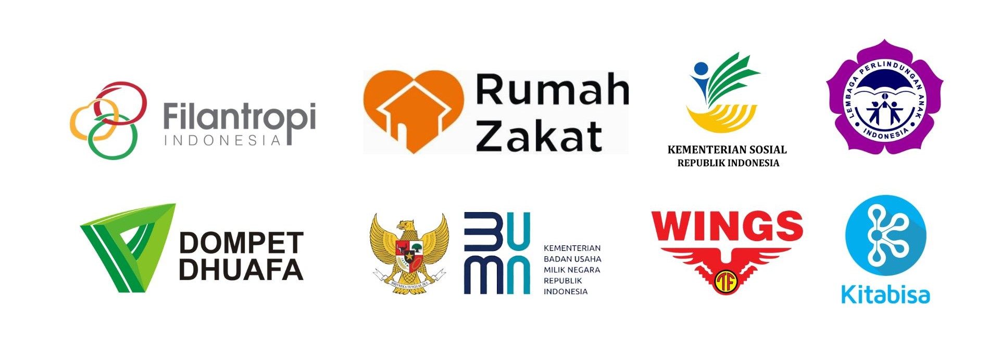

Selamat Datang di Tunas Asa
Tunas Asa percaya bahwa setiap anak rentan adalah potensi luar biasa yang perlu dirawat. Kami bekerja secara holistik, mengubah kerentanan menjadi kekuatan melalui program beasiswa, pelatihan life skill, dan pembinaan karakter. Mari bersama kami wujudkan perubahan nyata, dari harapan menjadi kemandirian sejati.
Pilar Utama
BERTUMBUH
Memberikan dukungan penuh terhadap akses pendidikan yang berkualitas.
BERKEMBANG
Mengembangkan potensi dan keterampilan untuk masa depan yang mandiri.
BERMANFAAT
Menciptakan dampak positif dan berkontribusi kembali kepada masyarakat.
Kolaborasi & Kemitraan
Tentang Kami
Sejarah
Tunas Asa didirikan pada tahun 2010 sebagai respons atas tingginya angka anak yatim, piatu, dan dhuafa yang rentan terhadap putus sekolah dan lingkaran kemiskinan. Berangkat dari kesadaran bahwa setiap anak adalah tunas bangsa yang berhak mendapatkan kesempatan terbaik, para pendiri membangun fondasi dengan keyakinan kuat bahwa pendidikan dan pemberdayaan adalah kunci utama. Hal ini melahirkan filosofi Tunas dan Asa—bahwa melalui dukungan yang tepat, setiap anak akan mampu bertumbuh menjadi pribadi yang berkembang, dan pada akhirnya dapat bermanfaat untuk menciptakan masa depan mereka sendiri dan bangsa.
Visi & Misi
Visi
"Menjadi organisasi filantropi terdepan dan terpercaya dalam menumbuhkan generasi muda yang cerdas, berkarakter mulia, dan mandiri, sebagai pilar utama pembangun masa depan bangsa."
Misi
- Menjamin akses pendidikan dengan dukungan penuh melalui program beasiswa.
- Memastikan kesejahteraan dasar dengan menyediakan kebutuhan pangan, sandang, dan kesehatan yang layak bagi penerima manfaat.
- Melaksanakan program life skill dan pengembangan bakat sesuai minat dan kebutuhan industri.
- Memberikan pembinaan spiritual dan mental untuk membangun integritas dan kepemimpinan.
Kawasan Jangkauan
Untuk memastikan bantuan tepat sasaran, organisasi Tunas Asa memiliki cabang operasional di berbagai kawasan di Indonesia:
- Kawasan 1: DKI Jakarta & Banten
- Kawasan 2: Jawa Tengah
- Kawasan 3: Jawa Timur
- Kawasan 4: Jawa Barat
- Kawasan 5: Sumatera Utara
Beasiswa Pendidikan
Beasiswa TUNASA adalah program unggulan Tunas Asa untuk tumbuhkan harapan melalui jalur pendidikan bagi anak yatim, piatu, dan dhuafa di jenjang SMA hingga Perguruan Tinggi. Beasiswa ini tidak hanya menyediakan dukungan finansial untuk biaya pendidikan, tetapi juga disertai dengan pendampingan karakter. Syarat utamanya adalah pendaftar harus memiliki Surat Kematian dna atau Surat Keterangan Tidak Mampu (SKTM), dan bersedia mengikuti program pembinaan. Pendaftaran dilakukan secara online, dilanjutkan dengan seleksi administrasi, wawancara, dan survei lapangan untuk memastikan bantuan disalurkan tepat sasaran. Untuk informasi lebih lanjut silakan cek Beasiswa TUNASA.
Pelatihan Life Skill
Program Pelatihan Life Skill bertujuan untuk membekali anak-anak yatim, piatu, dan dhuafa dengan keterampilan dan pembinaan karakter agar siap menghadapi tantangan masa depan. Program ini diselenggarakan melalui modul pelatihan interaktif, workshop, dan sesi mentoring. Tujuannya adalah memastikan setiap penerima manfaat dapat berkembang menjadi individu yang mandiri, bertanggung jawab, dan memiliki kecakapan hidup yang tinggi di luar prestasi akademik.Untuk informasi lebih lanjut silakan cek Program Life Skill.
Proyek Sosial
Program Proyek Sosial Tunas Berkontribusi yang bertujuan untuk menjadi agen perubahan aktif. Dalam program ini, peserta dibimbing untuk merencanakan, melaksanakan, dan mengevaluasi proyek sosial sederhana yang memberikan dampak nyata di lingkungan sekitar mereka, seperti kampanye kebersihan lingkungan, penggalangan dana kecil untuk warga lansia, atau bimbingan belajar singkat bagi adik-adik di panti. Tujuannya adalah menanamkan rasa tanggung jawab sosial dan kepemimpinan, membuktikan bahwa tunas yang telah Bertumbuh dan Berkembang kini mampu Bermanfaat bagi orang lain, sekaligus melatih kemampuan manajerial praktis mereka. Untuk informasi lebih lanjut silakan cek Proyek Sosial Tunas Berkontribusi.
Program: Klub ASAH (Anak Saleh, Aktif, & Hebat)
Klub ASAH adalah program pengembangan karakter dan keterampilan non-akademik yang kami selenggarakan setiap akhir pekan. Program ini terbuka untuk umum bagi anak-anak di sekitar lingkungan kami.
Kegiatan meliputi:
- Kelas Menggambar dan Seni
- Pelatihan Keterampilan Komputer Dasar
- Bimbingan Membaca dan Menulis (Calistung)
- Kegiatan Olahraga dan Permainan Tradisional
Program: Kunjungan Panti
Secara rutin, Yayasan Kasih Bangsa bersama para relawan dan donatur mengadakan kunjungan ke berbagai Panti Asuhan dan Panti Jompo. Kegiatan ini bertujuan untuk berbagi kebahagiaan, memberikan dukungan moril, dan menyalurkan bantuan.
Kami membawa donasi berupa bahan pokok, alat-alat kebersihan, dan juga mengadakan acara hiburan sederhana untuk menghibur para penghuni panti. Kami percaya sentuhan kasih dan perhatian langsung sangat berarti bagi mereka.
Galeri Kegiatan
Dokumentasi berbagai program dan kegiatan yang telah kami laksanakan.


Formulir Donasi
Dukungan Anda sangat berarti. Silakan isi formulir di bawah ini untuk memberikan donasi dan menjadi bagian dari perubahan.
Hubungi Kami
Kami senang terhubung dengan Anda. Silakan gunakan informasi di bawah ini untuk terhubung dengan kami.
Alamat:
Jl. Kebaikan No. 123, Jakarta Tengah, Indonesia 10110
Email:
info@tunasa.org
Telepon:
(021) 123-4567
Jam Operasional:
Senin - Jumat: 08.00 - 17.00 WIB
Pertanyaan yang Sering Diajukan
Bagaimana saya dapat menjadi relawan dalam acara yang diselenggarakan Tunas Asa?
Anda dapat menjadi relawan dengan mengikuti terus akun media sosial resmi kami dalam Instagram dan Facebook. Setiap kali ada kegiatan yang membutuhkan relawan, kami akan menyebarkan flyer dan tautan pendaftaran di postingan tersebut.
Apakah organisasi ini terdaftar secara hukum dan dapat dipercaya?
Ya, Tunas Asa adalah organisasi nirlaba yang terdaftar secara resmi di Kementerian Hukum dan HAM dengan SK No. GTW-12345.67.89.
Apakah menerima donasi dan bagaimana cara melakukannya?
Ya, kami menerima donasi dalam bentuk uang, perlengkapan sekolah, pakaian layak pakai, makanan dan atau minuman, dan bentuk lainnya. Anda dapat mengisi formulir donasi di dalam menu Donasi.
Bagaimana dana yang saya donasikan dapat disalurkan?
Dana Anda disalurkan melalui 3 pilar program utama kami: BERTUMBUH (Pendidikan & Kesejahteraan), BERKEMBANG (Pelatihan Keterampilan), dan BERMANFAAT (Kemandirian). Kami berkomitmen menjaga transparansi dengan alokasi 80% untuk program dan 20% untuk operasional. Laporan detail akan tersedia dalam enam bulan sekali melalui unggahan berita
Siapa saja penerima manfaat dari Tunas Asa?
Fokus utama kami adalah anak yatim, piatu, dan dhuafa. Kami juga memberdayakan keluarga prasejahtera dan masyarakat di sekitar mereka agar tercipta ekosistem yang mendukung tumbuh dan berkembangnya anak-anak.
Tunas Asa Buka Beasiswa TUNASA Tahap II 2025

Jakarta, 6 Juni 2025 - Organisasi Tunas Asa kembali menunjukkan komitmennya dalam memerangi putus sekolah akibat kendala biaya. Hari ini telah resmi diumumkan pembukaan pendaftaran Program Beasiswa TUNASA Tahap II untuk tahun ajaran 2025. Program ini menargetkan ratusan anak yatim, piatu, dan dhuafa di jenjang SMA hingga mahasiswa S1 yang membutuhkan dukungan finansial dan pendampingan karakter.
Pendaftaran Beasiswa TUNASA Tahap II dibuka mulai 6 Juni hingga 19 Juni 2025 secara daring melalui laman resminya. Program ini merupakan implementasi nyata dari pilar BERTUMBUH organisasi, yang fokus pada penjaminan akses pendidikan berkualitas. Dukungan yang diberikan mencakup bantuan biaya sekolah atau Uang Kuliah Tunggal (UKT) dan uang saku hingga mencapai Rp 5.000.000 per tahun, bertujuan agar para penerima manfaat dapat berfokus penuh pada studi mereka tanpa terhalang biaya.
Bapak Fulan, selaku Ketua Tunas Asa, menjelaskan bahwa beasiswa ini tidak hanya menyasar aspek akademik. "Kami tidak hanya mencari siswa dengan nilai tinggi, tetapi juga mereka yang memiliki semangat juang dan komitmen kuat untuk Berkembang. Oleh karena itu, selain syarat administratif seperti SKTM dan rata-rata nilai minimal, calon penerima juga wajib mengikuti sesi wawancara dan pembinaan karakter dari kami," ujarnya. Program ini akan memprioritaskan penyaluran di seluruh kawasan jangkuan, di mana angka kemiskinan dan kebutuhan pendidikan tergolong tinggi.
Selain dukungan finansial, seluruh penerima beasiswa otomatis diikutsertakan dalam program pengembangan diri seperti Pelatihan Life Skill dan Mentor Karakter. Hal ini sejalan dengan misi Tunas Asa untuk menghasilkan lulusan yang tidak hanya cerdas tetapi juga terampil dan berdaya, sehingga kelak dapat Bermanfaat bagi masyarakat luas.
"Kami ingin beasiswa ini menjadi modal awal bagi mereka untuk ciptakan masa depan yang mandiri, sebagimana tujuan dari organisasi kami," tambah Fulan.
Masyarakat yang ingin mendukung program Beasiswa TUNASA ini atau mengetahui detail persyaratan dan alur pendaftaran dapat mengakses informasi lengkap di laman resmi atau melalui akun media sosial resmi. Donasi dan dukungan masyarakat sangat diharapkan untuk memperluas jangkauan beasiswa ini di tahun mendatang.
« Kembali ke Beranda
Seni Kreatif TUNASA, Perkuat Karakter dan Ekspresi Diri Anak

Jakarta, 10 Agustus 2025 - Organisasi Tunas Asa sukses menyelenggarakan "Kelas Seni Kreatif" yang penuh keceriaan bagi puluhan anak yatim dan dhuafa di Kalideres, Jakarta Barat. Kegiatan ini merupakan bagian dari pilar BERKEMBANG yang fokus pada penguatan potensi dan karakter di luar akademik.
Kelas seni ini merupakan salah satu modul dari Program Pelatihan Life Skill, di mana anak-anak tidak hanya diajarkan keterampilan bertahan hidup, tetapi juga pentingnya kecerdasan emosional dan sosial. Fulanah, Koordinator Mentor Kreatif, menjelaskan bahwa seni adalah media terapi yang efektif untuk membangun rasa percaya diri dan kecerdasan emosional anak.
Fulanah menjelaskan bahwa kegiatan ini memiliki dampak psikologis yang signifikan. "Seni adalah media terapi dan ekspresi yang luar biasa. Anak-anak yang mungkin menyimpan beban emosional dapat menyalurkannya lewat warna," tuturnya.
Keberhasilan acara ini didukung penuh oleh semangat para penerima Beasiswa TUNASA yang secara konsisten menyumbangkan waktu dan keahlian mereka. Keterlibatan mereka membuktikan visi organisasi untuk menghasilkan generasi muda yang tidak hanya cerdas tetapi juga berkarakter kuat.
« Kembali ke Home
Bekal Masa Depan, Penerima Beasiswa TUNASA Ikuti Seminar Literasi Keuangan
Ternate, 6 November 2025 - Organisasi Tunas Asa menguatkan bekal para penerima Beasiswa TUNASA tingkat SMA/SMK/Sederajat melalui seminar intensif Literasi Keuangan Dasar. Kegiatan ini merupakan bagian krusial dari Program Pelatihan Life Skill, yang bertujuan mempersiapkan remaja yatim dan dhuafa agar cakap dalam mengelola finansial dan siap menghadapi kemandirian di masa depan.
Seminar yang diselenggarakan di Aula Hotel Aum Kota Ternate ini diikuti oleh 200 siswa penerima beasiswa. Fokus materi adalah pengenalan konsep menabung, pengelolaan anggaran sederhana, serta menghindari jebakan utang konsumtif. Kegiatan ini menegaskan komitmen Tunasa Asa dalam pilar BERKEMBANG, yaitu memberikan keterampilan praktis yang mendukung pertumbuhan karakter dan kemandirian, melampaui dukungan biaya pendidikan formal.
Heri selaku Koordinator Kawasan Jangkauan Maluku Utara, menyampaikan pentingnya literasi keuangan bagi anak-anak yang berada dalam situasi ekonomi sulit. "Literasi keuangan adalah keterampilan life skill yang paling fundamental. Dengan bekal ini, mereka tidak hanya tahu cara mencari uang di masa depan, tetapi juga tahu cara mengelolanya agar dana beasiswa yang diterima benar-benar menjadi modal untuk Tumbuhkan Harapan, bukan sekadar habis untuk kebutuhan sesaat," jelasnya.
Seminar ini difasilitasi oleh Filantropi Indonesia, yang memberikan contoh kasus realistis dan sesi interaktif mengenai perbedaan antara kebutuhan dan keinginan. Para siswa SMA terlihat antusias belajar menyusun anggaran bulanan dan merencanakan target tabungan kecil.
Tunas Asa berkomitmen untuk terus menghadirkan pelatihan yang mendalam demi kemandirian penerima manfaat. Mari bersama-sama Ciptakan Masa Depan yang berdaya bagi Tunas Harapan bangsa.
« Kembali ke Beranda